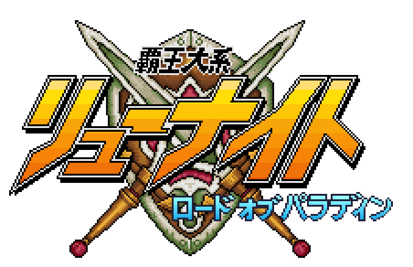
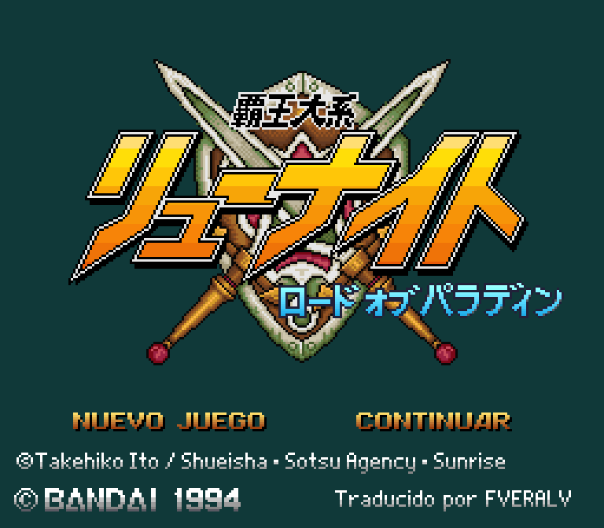
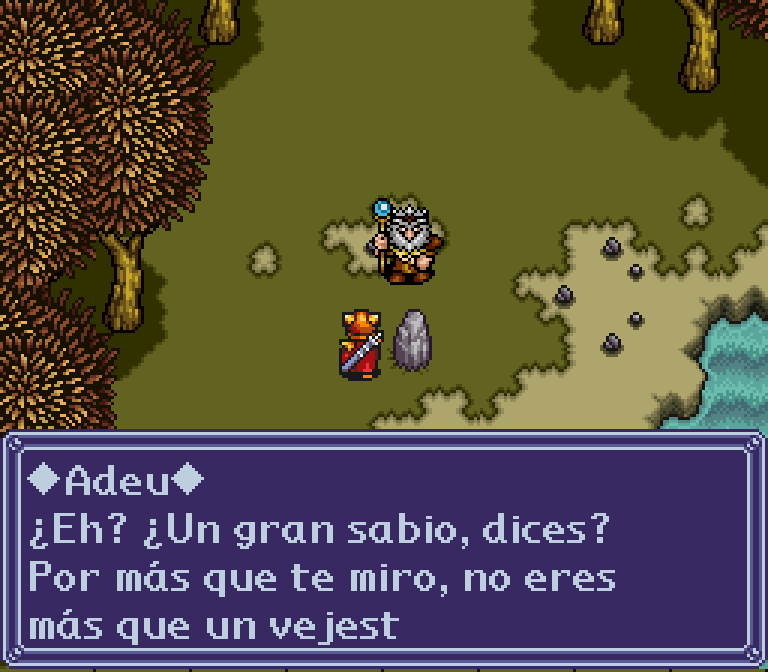
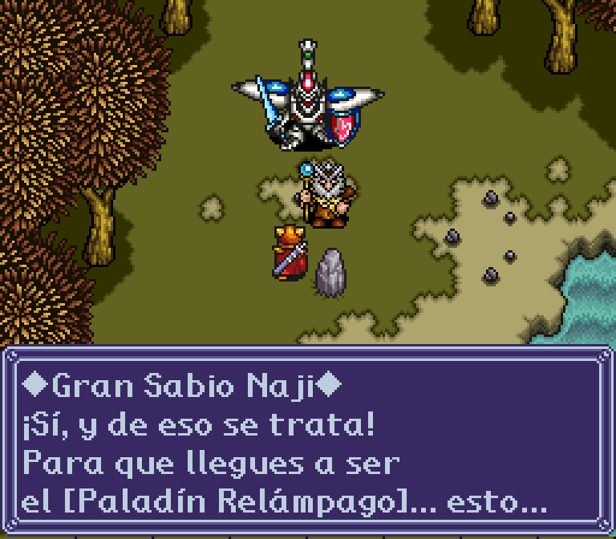
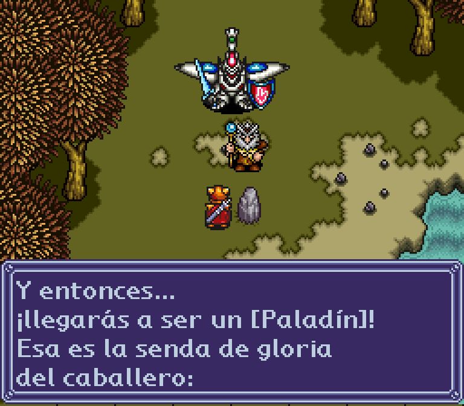

Lord of Paladin · Traducción al español
Proyecto de traducción fan de Haou Taikei Ryuu Knight (Super Nintendo) al español por Fveralv. Progreso y descarga del parche.
Capturas de pantalla




Progreso
Parche
| Versión | 1.0 |
| Actualizado | 10/11/2026 |
| Formato | BPS |
| Juego original | Haou Taikei Ryuu Knight – Lord of Paladin (Japón, Rev 1) · sin cabecera · CRC32 2740560B |
| Basado en | Parche inglés de Game Translate (no hace falta aplicarlo antes) |
Cómo aplicarlo
- Abre Rom Patcher JS, Floating IPS o MultiPatch.
- Elige tu ROM japonesa (haz antes una copia) y el parche
.bps. - Aplica y juega la ROM resultante en tu emulador.
Novedades de la versión 1.0
- Primera versión completa: los 1227 mensajes de diálogo en español.
- Nombres de objetos, magias, lugares y los 12 títulos de episodio redibujados con la fuente del juego.
- Menús e interfaz: sistema, configuración, tiendas, Sí/No y avisos.
- Pantalla de título en español («NUEVO JUEGO / CONTINUAR») con el estilo original.
- Acentos, eñe y signos de apertura (á é í ó ú ü ñ Á É Í Ó Ñ ¿ ¡).
El parche solo contiene las diferencias con la ROM original. No incluye el juego: necesitas tu propia copia legal.
¿Te gusta lo que hago? Si crees que mi trabajo merece la pena, puedes apoyarme invitándome a un café. ¡Cualquier aporte me ayuda a seguir creando! ☕
Herramientas
Las mismas herramientas con las que se ha hecho la traducción (Python 3 + Pillow). Con ellas puedes revisar o mejorar esta traducción, o hacer otra a cualquier idioma:
- Extraen e insertan diálogos, nombres, menús y gráficos, y avisan si una línea no cabe en la ventana del juego.
- Redibujan automáticamente los nombres y menús (que en el juego son imágenes) con la fuente original.
- Compresor LZSS propio y creación del parche BPS verificado.
- Con tu ROM japonesa,
python tools/reconstruir.pygenera exactamente este parche.
Código fuente y documentación técnica (mapa de la ROM, punteros, compresión, fuente): repositorio en GitHub · DOCUMENTACION.md